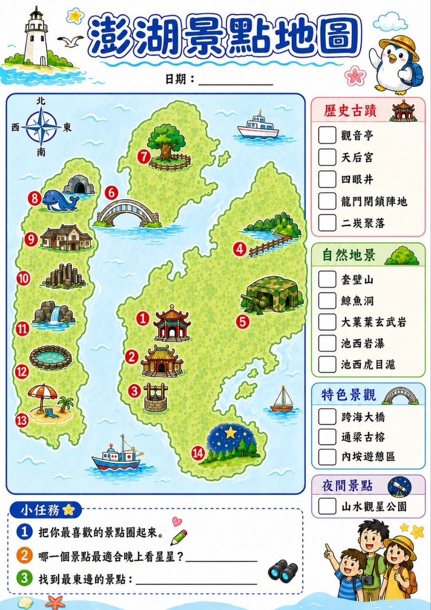

交通資訊
- 去程：2026/07/07（二）B78617｜台北（TSA）13:55 → 澎湖（MZG）14:45｜訂位艙等：Y
- 回程：2026/07/09（四）B78608｜澎湖（MZG）10:10 → 台北（TSA）11:05
- 航空公司：立榮航空
- 建議：抵達後先入住或放行李，7/7 晚上直上觀音亭煙火。
先看景點編號與每日安排，快速確認每天要跑的路線、景點和夜間行程。
其餘費用可依實際房價、租車與餐飲安排再微調。
Day 1 走市區和煙火，Day 2 跑北環海景，Day 3 留給早餐、採買和回程。

右側分類可先看今天偏古蹟、海景、特色景觀，還是夜間行程。
景點編號可直接對照下方卡片，確認日期、時段和順路安排。
先看分類，再對照景點編號與每日路線，出發前直接確認今天要跑的段落。
Day 1 晚上煙火主場，安排在市區散步後前往最順。
Day 2 早上優先安排，方便配合潮汐與光線。
北環中段短停拍照點，可安排 10 到 15 分鐘。
下午短停拍照即可，現場偏曬。
適合排在傍晚，看海和等夕陽。
Day 2 夜間行程，可放在晚餐後前往。
本次行程日期為 7/7–7/9；若有安排花火節或夜間活動，實際施放日期/時間、無人機場次、是否因天候取消，請以「澎湖國際海上花火節官方公告」為準。